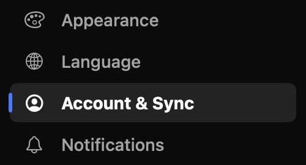
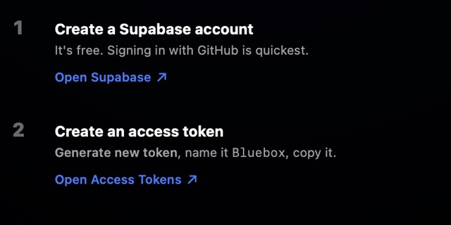
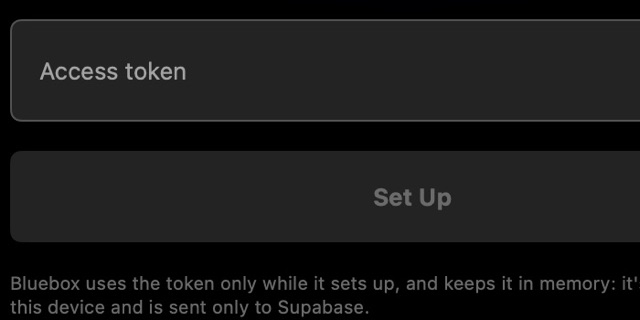
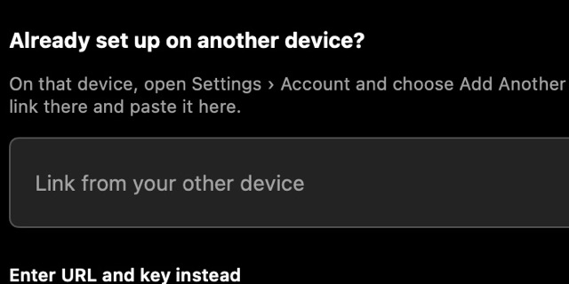

Sync & accounts
Optional. Your lists and progress on all your devices, through your own free Supabase server. Bluebox sets it up for you in about three minutes.
What sync gives you#
- Your library everywhereMy List, your lists, progress and profiles, live on all your devices.
- Your settingsPlayback, subtitle style, skip rules and add-ons, per profile.
- Remote and partiesThe iPhone remote and Watch Party run on it.
Without it, Bluebox works fully on each device. The server is yours, on Supabase's free plan; Bluebox has no server of its own and never sends email.
Set it up#

Open Settings › Account & Sync.
Open Supabase and sign up (free). Then Open Access Tokens, choose Generate new token, name it Bluebox and copy it.
Paste it into Bluebox. Setup starts by itself.- Create Your Account: a username and a password of 8 or more characters.
- In the Supabase dashboard, turn off public Realtime (one switch).
Sign in with the same username on your other devices, or add them with a QR code.
Technical details · What setup does
Setup creates a project named Bluebox in a region near you (or reuses one with that name), adds Bluebox's tables with row level security, turns off confirmation emails, and turns off sign-ups once your account exists. Every step is safe to repeat, so if anything stops it, Try Again carries on where it was.
The token is only kept in memory while setup runs, and only ever sent to api.supabase.com. You can delete it on the Access Tokens page (supabase.com/dashboard/account/tokens) afterwards.
Free plan already has two projects? Bluebox lists them so you can use one instead (it adds its tables there, turns off that project's confirmation emails and changes nothing else), or you can pause one in the dashboard and try again.
Turn off public Realtime#
In the Supabase dashboard, open Realtime › Settings, turn off Allow public access, and save. Setup can't change this one for you.
Technical details · Why
Bluebox only uses private channels that just your account can join. With public access on, another client could join a public channel of the same name.
Usernames and passwords#
Usernames are 3 to 32 letters, numbers, dots, dashes or underscores. Bluebox can't reset a forgotten password: set a new one in the Supabase dashboard under Authentication › Users.
Technical details · Why usernames look like email addresses in Supabase
Supabase needs an email address, so Bluebox stores a username as username@bluebox.invalid, an address that can never receive mail. Usernames aren't case-sensitive.
Add another device#
- On a signed-in device: Settings › Account & Sync › Add Another Device shows a QR code.
- On an iPhone or iPad, scan it with the Camera.

On a Mac, paste the link under Already set up on another device?
Confirm the server, then sign in with your username and password.
Technical details · What's in the link
The bluebox://connect?… link holds only the project's address and its public key, never a token or password. A link opened from outside asks Connect to <server>? first. A device signed in to a different server isn't switched: sign out and choose Change Server… first.
What syncs#
- SyncsMy List and lists, watch progress, profiles, and each profile's settings and add-ons.
- Only if you chooseAPI keys and add-on links, with Sync API Keys (off by default).
- Stays on the deviceFiles, folders, links, sources, downloads, PINs and age limits.
Technical details · Sync in detail
Sync runs at launch, when the app comes to the front, a couple of seconds after you change My List, when you close the player, and from Sync Now. For settings, the newest change wins. An add-on added by link syncs by name only: its link, which can hold a debrid key, stays in the Keychain, and another device shows Paste Link next to it.
Sync API Keys syncs the TMDB token, OMDb, OpenSubtitles and debrid keys and add-on links. It asks first, because Supabase stores them as plain text, readable by anyone with your project's dashboard. Remove Keys from Server deletes them from the project without touching any device.
Signing out and switching accounts#
- Signing out sends anything still waiting first, and keeps the library on the device.
- Signing in to another account asks first: use that account's library, add this device's library to it, or sign out.
- Bluebox never signs in from a link.
Technical details · Switching accounts in detail
If changes haven't been uploaded when you sign out, Bluebox warns you. Use <account>'s Library removes this device's copy of the old one (it stays in the old account); Add This Device's Library adds it to the new account. A sign-in link can only have come from someone else, so it's refused.
Setting it up by hand#
For a self-hosted Supabase, or without an access token: Settings › Account & Sync › Enter URL and key instead.
Technical details · Manual setup steps
- Create a project (the free plan is enough) in a region near you.
- In the dashboard's SQL Editor, paste the contents of
Backend/supabase/setup.sqland run it once. For Watch Party, also runmigrations/20261031000000_watch_together.sql. - Authentication › Sign In / Providers › Email: turn off Confirm email. Then turn off public Realtime.
- Project Settings › API Keys: copy the Project URL and the publishable key (
sb_publishable_…; a legacy anon key also works) into Bluebox and tap Connect. - Create an account on the first device; sign in on the others.
Never paste a secret or service-role key. Bluebox refuses one outright without storing or sending it. If you've pasted one somewhere it shouldn't be, rotate it in Project Settings › API Keys.
Technical details · Connect errors
| Message | Fix |
|---|---|
| Couldn't reach that project: no server has that name | A typo in the Project URL, or the project is paused. Free projects pause after a week without use: restore it in the dashboard. |
| The project rejected that key | Copy the publishable or anon key again. |
| Bluebox's tables are missing | Run setup.sql, then Connect again. |
| An older version of Bluebox's tables | Run migrations/20261028000000_profiles.sql, then Connect again. |
| Username sign-in needs Supabase's Email provider | Authentication › Sign In / Providers › Email › on. |
| New accounts on this server must confirm an email | Turn off Confirm email. |
| Remote control and instant sync are off | Run migrations/20261030000000_realtime_private.sql (safe to run again), or set up again with an access token. Then turn off Allow public access. |
Check Setup runs these checks again at any time. If a sign-in is ever refused later (for example after you delete the user in the dashboard), Bluebox signs out and says so.